After finishing my roll of film, the light was beginning to fade. I had come prepared, so I took out my old Canon 5D with the EF 50mm f/1.8 STM. I wanted to see once again what this small and inexpensive 50mm lens could do.
It did not disappoint. I found both its color rendering and out-of-focus areas surprisingly pleasing. The 50mm remains one of my favorite focal lengths, giving me a simple and natural way of looking at the relationships between near and far, sharpness and blur.
Although this was the museum’s final visiting period of the day, it was still crowded. While photographing, I deliberately looked for relationships between visitors and exhibits, as well as the layers created by objects at different distances within the exhibition spaces.
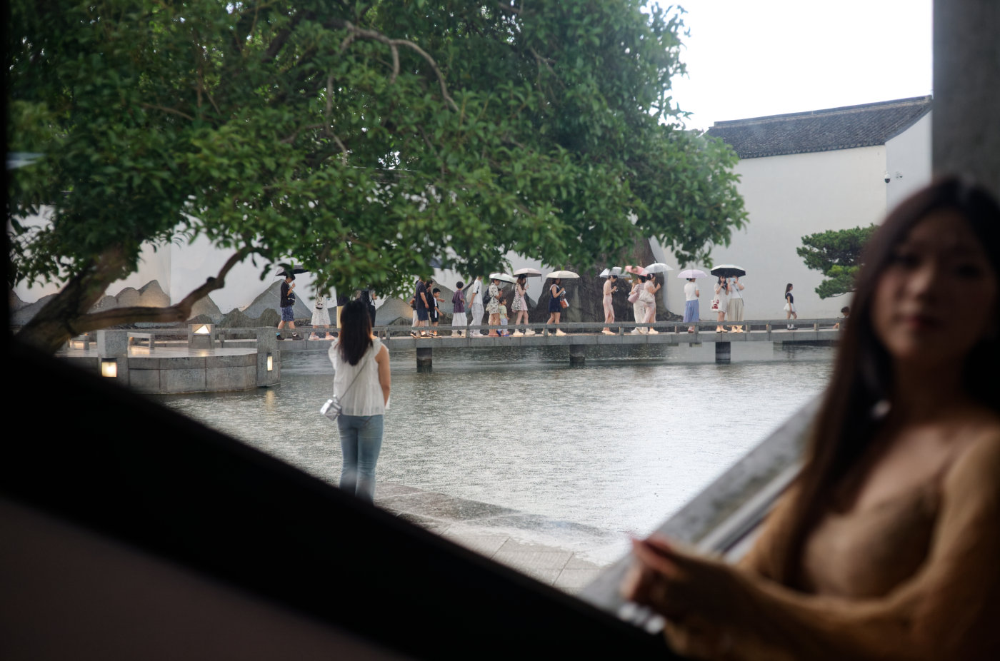
展馆内靠窗拍照的人与窗外的风景A visitor photographs by the window, with the scenery outside beyond her.
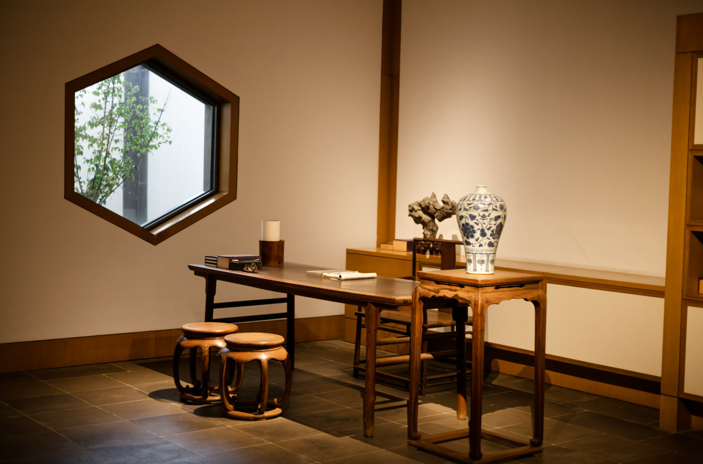
被围起来不允许进入的书桌一隅A corner with a desk, cordoned off from visitors.
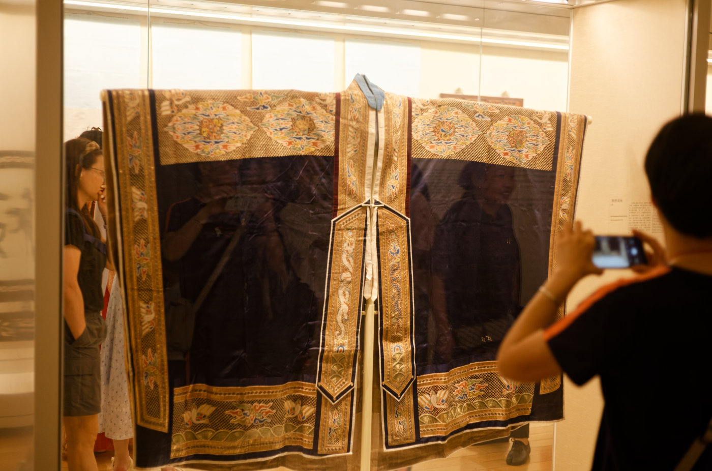
参观者在对着鲜艳的古代服装拍照A visitor photographs a brightly colored historical garment.
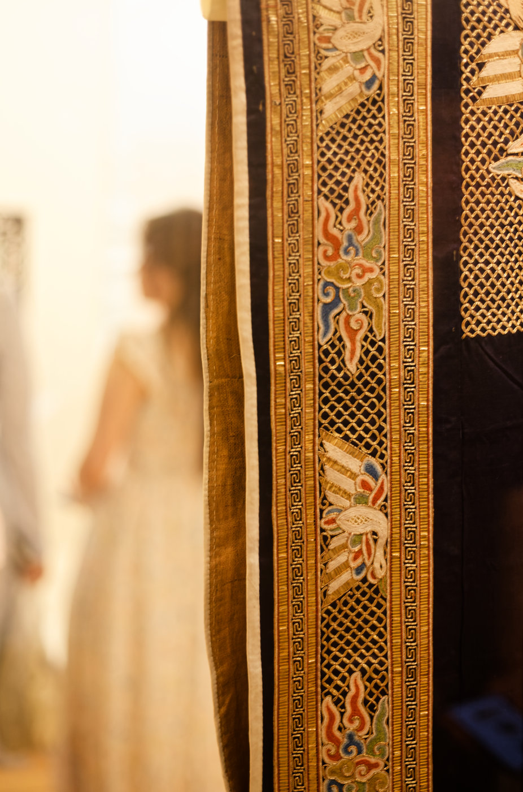
我注意到精美的服饰图案与虚化的美丽背影Intricate patterns on the garment, with a visitor softly blurred beside them.
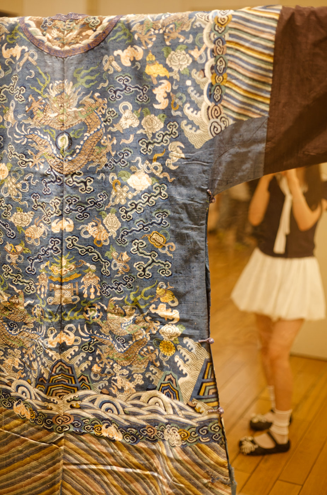
在古代服装精美图案的另一面，一位女孩在拍照On the other side of the ornate garment, a young woman takes a photograph.
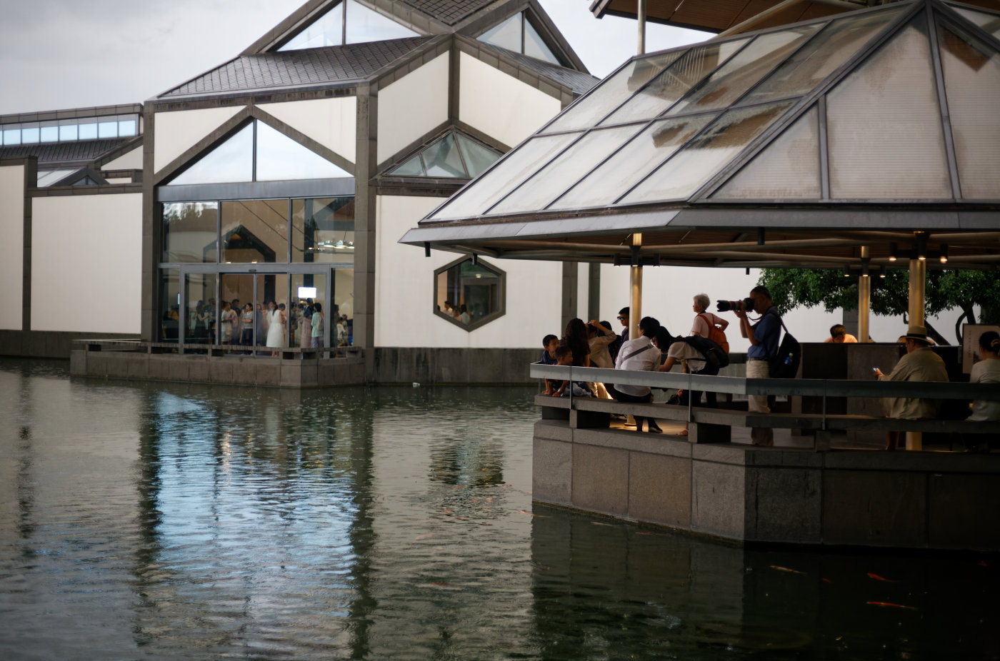
我来到展馆外面，用标头拍下了建筑的局部Outside the museum, I photographed a detail of the architecture with the 50mm lens.
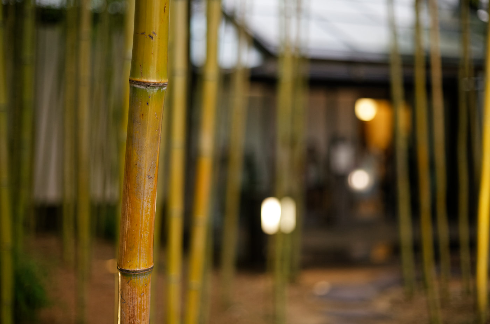
展馆外面有一小片竹林，我用大光圈看一下小痰盂的对焦与虚化表现A small bamboo grove outside the museum, photographed wide open to see how the lens renders focus and blur.
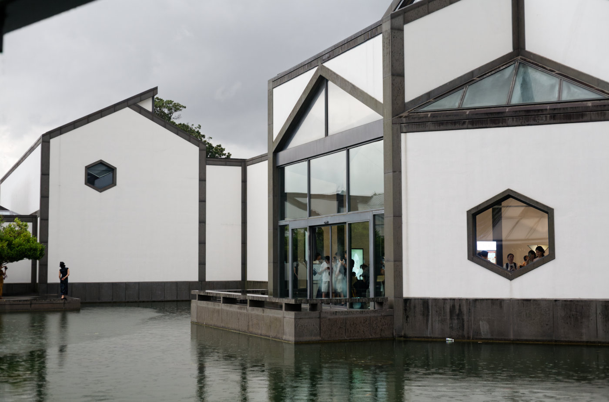
展馆建筑的另外一个局部，远处左边有一个女孩正在摆POSE拍照Another detail of the museum architecture, with a young woman posing for a photograph in the distance.
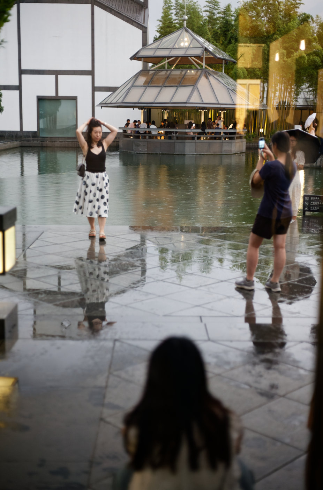
下雨了，但女孩们仍然冒雨拍照It began to rain, but the young women kept taking photographs.
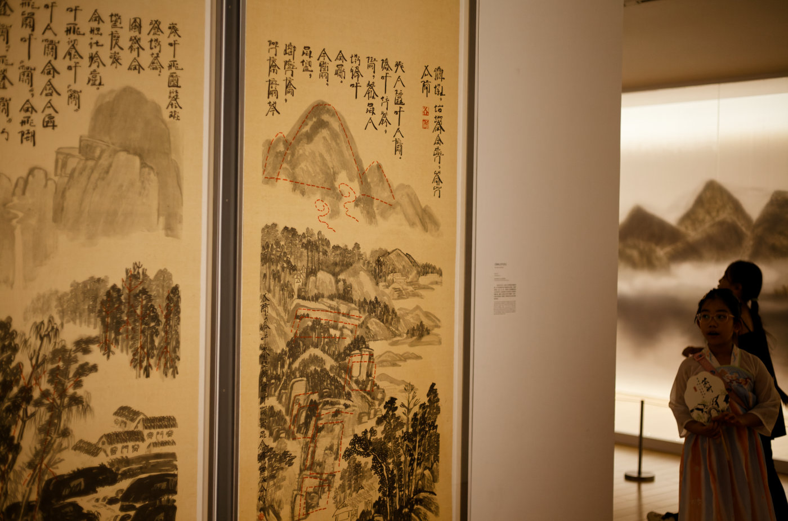
富有意境的山水画展品与参观者A visitor beside an atmospheric landscape painting.
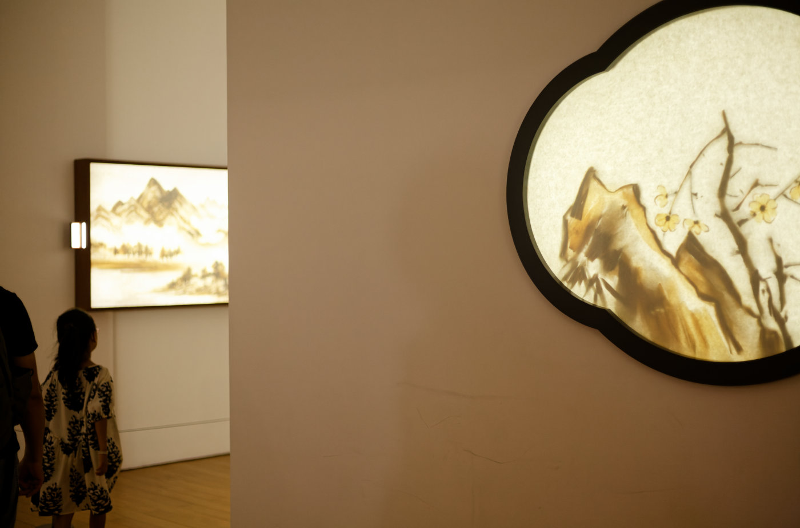
展馆内部错落的展品Exhibits arranged in layers within the gallery.
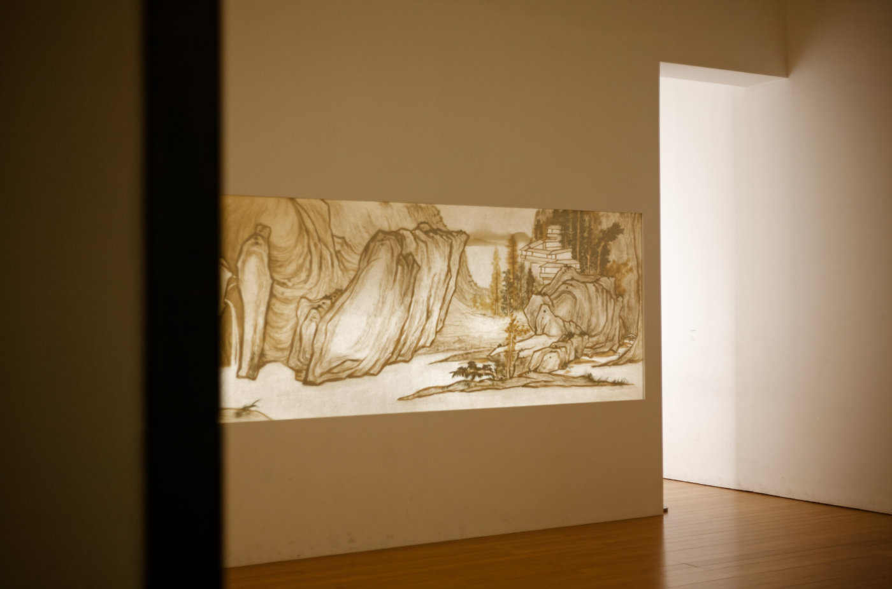
暮色降临，人去楼空Evening falls, and the museum is finally empty.